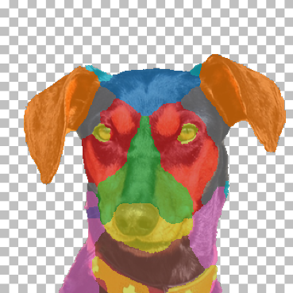
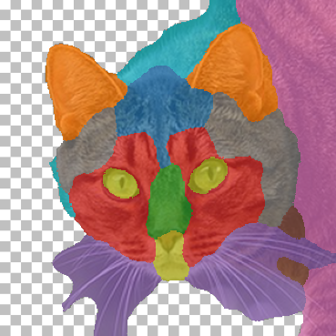
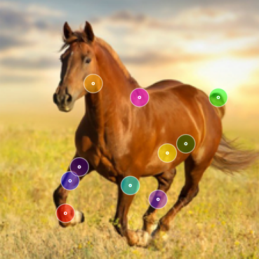
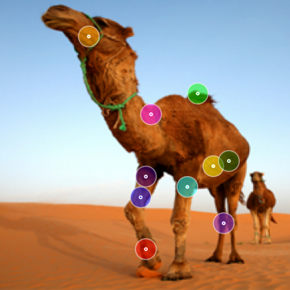
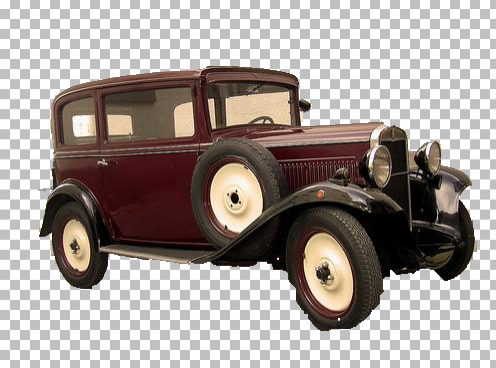
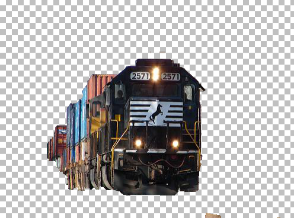

|  |  |
Part Co-segmentation:
AFHQ (Fig. 10)
Video Results Small Sets (Fig. 9) |
|---|
|  |  |
Point Correspondences:
Sparse Correspondences (Fig. 13)
Spair71k Results (Tab. 3) |
|---|
|  |  |
Co-segmentation:
Pascal-Co (Fig. 8)
Pascal-Co Ablation (Tab. 1 bottom) Internet300 (Tab. 1) MSRC (Tab. 1) Pascal VOC (Tab. 1) |
|---|---|---|
Technical Details |